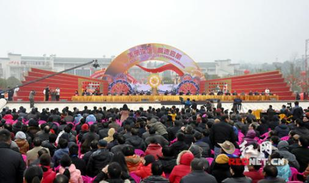

11月12日至13日，中央宣讲团在省人民会堂举行学习贯彻党的十九届五中全会精神报告会，并走进马栏山视频文创产业园、湖南大学开展宣讲，与干部群众和师生互动交流。
“宣讲报告全面系统、重点突出，具有很强的思想性、针对性和指导性，为今后的工作提供了根本遵循。”宣讲报告在全省干部群众中引发热烈反响，大家纷纷表示，要把思想和行动统一到全会精神上来，持续掀起学习宣传贯彻热潮，勇担时代重任，奋力谱写新时代坚持和发展中国特色社会主义湖南新篇章。
学深悟透，推动全会精神落地生根
“中央宣讲团的宣讲既高屋建瓴，又鲜活接地气，为我们扶贫人推进下一步工作指明了方向。” 省扶贫办党组书记、主任王志群说，全省扶贫人将进一步学深悟透，切实用全会精神武装头脑、指导工作，扛牢政治责任，保持攻坚定力，做好全面脱贫与乡村振兴在目标体系、体制机制、政策举措、路径方式等方面的衔接，加快编制全省“十四五”巩固脱贫成果规划，建立健全解决相对贫困问题的长效机制。
“深受鼓舞、倍感振奋。”省住建厅党组书记、厅长鹿山表示，全省住建系统将科学谋划住建领域“十四五”工作规划，围绕全会提出的“推进以人为核心的新型城镇化”，充分发挥长株潭都市圈的集群优势，促进中小城市城镇化高质量发展，坚持“房住不炒”定位，加快建立多主体供给、多渠道保障、租购并举的住房制度，大力实施农村人居环境整治和农村危房改造，合理配置城乡公共资源，加强对城市景观风貌的规划设计和管控引导，为建设富饶美丽幸福新湖南贡献住建力量。
“十四五”时期我国将进入新发展阶段，党的十九届五中全会提出要以改革创新为根本动力。“我们将进一步用好改革督察利器，直奔主题、直面问题、直击要害，形成改革闭环。”省委改革办督察处处长陈若杨说，全省改革督查部门将进一步做好改革第三方评估，全链条覆盖改革“事前、事中、事后”，确保改革不走偏、不落空。
守正创新，推动文化产业高质量发展
“习近平总书记来到我们这里的兴奋还没散去，没想到又能和中央宣讲团成员面对面，听全会精神宣讲。”11月12日下午6时，中央宣讲团一行刚下飞机就直奔马栏山视频文创产业园，园区和入驻企业的干部群众都激动不已。
“现在群众对文化产品的需求，从缺不缺、够不够转变为好不好、精不精，这对文创人员来讲，是一个莫大鞭策，同时也感到肩上的担子更重了。”银河酷娱联合创始人胡明说，全会提出到2035年建成文化强国的目标，我们这一代文创人员任重道远。任何时候都要坚持正确导向，保证生产优质内容不跑偏；坚持守正创新，结合新技术、打开新思路，发现身边小美好，弘扬社会正能量，讲好中国故事。
“现场听宣讲，更有感染力，也更受鼓舞。”博胜集团董事长杜杉认为，全会进一步明确了文化产业蓬勃发展的方向，最重要的两个关键点是抓住精品和创新。要推进文化和科技深度融合，衍生新的文化产业业态，加大资金投入，强化精品内容的生产和研发，相信在马栏山这块热土，一定能孵化出一个更大的想象空间。
作为一名文创产业的建设者和参与者，马栏山视频文创产业园管委会副主任黄燕深感责任重大、使命光荣。她表示，全会为进入新发展阶段指明了方向，结合习近平总书记在湖南考察时的重要指示精神，园区将加强党建引领，企业入驻到哪里，党建就覆盖到哪里，服务就延伸到哪里；加强科技和文化的融合，健全产业链；加快基础设施和项目的建设，营造一个宜居宜业宜游的美好环境。
湖南文化产业网版权所有 (c) All Rights Reserved.
未经湖南文化产业网书面特别授权，请勿转载或建立镜像